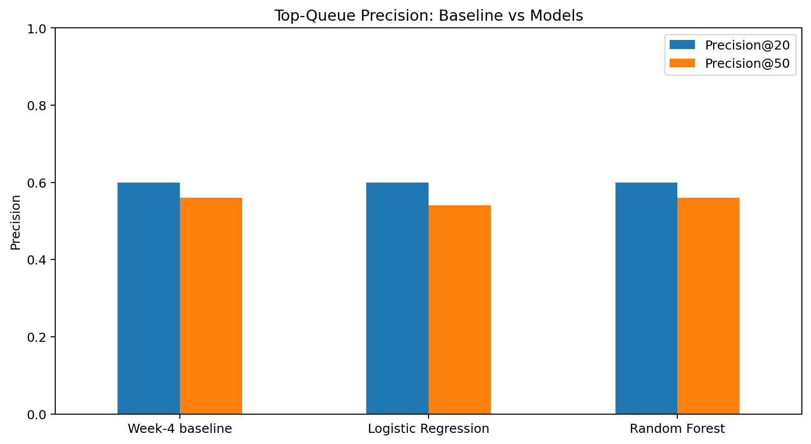
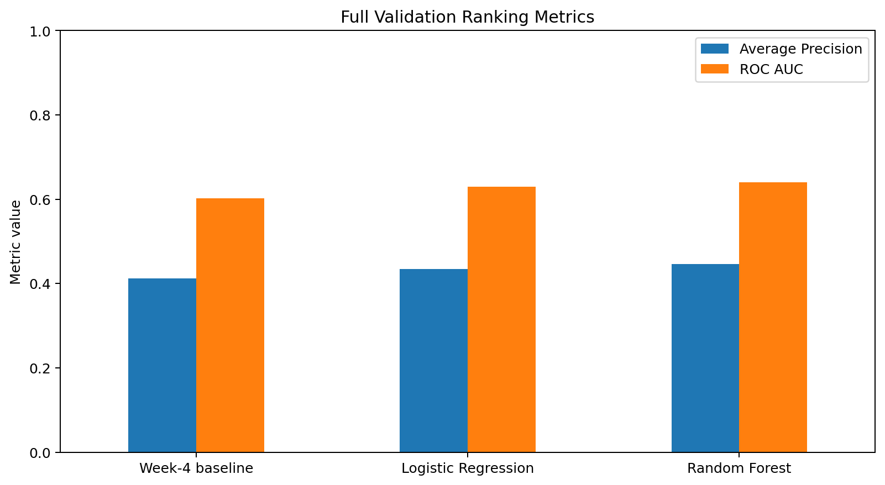
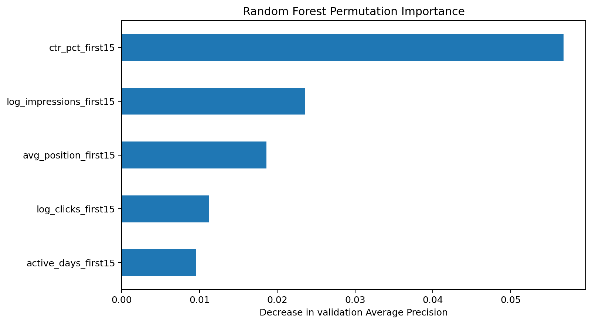

Abstract
Content teams need a practical way to decide which existing webpages deserve refresh review first. This study uses page-level search-performance measurements from the FlyRank internship warehouse to test whether pre-decision signals can rank pages that later experience a greater-than-20% decline in average daily impressions. I compared a transparent CTR-and-visibility rule baseline with Logistic Regression and Random Forest using a client-grouped validation split and the same held-out pages for every method. Random Forest tied the baseline at Precision@20 with 0.600 and at Precision@50 with 0.560, while producing stronger full-ranking metrics with Average Precision of 0.446 versus 0.412 for the baseline. The result supports using the learned model as an additional human-review signal, not as proof that a page needs refreshing or that refreshing it would cause recovery.
Introduction and problem statement
A content team cannot manually inspect every existing webpage. The practical decision is which pages should be inspected first when review capacity is limited.
Search declines may reflect outdated content, changing demand, query intent, competitors, SERP features, technical issues, or measurement variation. A low-performing page should therefore not automatically be rewritten.
Data
The study uses build
v20260703
of the FlyRank internship warehouse and the
fact_content_daily_performance table.
The source grain is one report date, pseudonymized client, and pseudonymized content item. Daily records were aggregated into one row per client-content pair.
March 1–15, 2026 supplies model inputs. March 16–31 supplies only the observed outcome. June 2026 remains sealed.
URLs, domains, raw queries, GA4 fields, identifiers, future-window measurements, product flags, and label-derived inputs were excluded from the model.
Methodology
Observed label
A page receives a positive observed label when its later average daily impressions are more than 20% below its feature-window average.
Features
- Log-transformed impressions
- Log-transformed clicks
- CTR percentage
- Average search position
- Observed feature-window days
Baseline and models
The baseline gives 70% weight to CTR deficit and 30% to log-scaled impression volume. Logistic Regression is the readable model, while Random Forest is the nonlinear challenger. Probabilities are used as ranking scores.
Validation
Training and validation are grouped by client. No validation client appears in training. All methods use the same validation pages, metrics, and tie-breaking process.
Leakage controls
Baseline reference values and model preprocessing are fitted on training clients only. Identifiers, future fields, outcome fields, labels, URLs, domains, queries, and product flags are not model inputs.
Results
| Method | Base rate | Correct @20 | Precision@20 | Correct @50 | Precision@50 | Average Precision | ROC AUC |
|---|---|---|---|---|---|---|---|
| Week-4 baseline | 0.333 | 12 | 0.600 | 28 | 0.560 | 0.412 | 0.602 |
| Logistic Regression | 0.333 | 12 | 0.600 | 27 | 0.540 | 0.435 | 0.630 |
| Random Forest | 0.333 | 12 | 0.600 | 28 | 0.560 | 0.446 | 0.640 |


Random Forest did not improve the two limited-queue precision metrics over the Week-4 baseline. It improved Average Precision from 0.412 to 0.446 and ROC AUC from 0.602 to 0.640.
The result is a modest full-ranking improvement, not a decisive improvement at the top of the queue.
Limitations and honest framing
- The study uses one grouped development split from one calendar month.
- Clients differ in available history and measurement coverage.
- The short-window label may reflect seasonality, volatility, changing demand, or technical events.
- Page-level averages hide query-level and SERP-level variation.
- The model does not observe content age, query intent, competitor actions, or technical condition.
- A selected page is a review recommendation, not proof that a refresh is necessary.
The study does not reveal Google's ranking algorithm and does not estimate the causal effect of refreshing content.
Concrete error cases
| Error type | Model rank | Model score | Impressions | Clicks | CTR % | Average position | Later change % |
|---|---|---|---|---|---|---|---|
| false_positive_top_50 | 4 | 0.726 | 14588.0 | 6.0 | 0.041 | 8.206 | -13.454 |
| false_positive_top_50 | 8 | 0.724 | 8920.0 | 4.0 | 0.045 | 6.810 | 76.874 |
| decline_outside_top_50 | 1873 | 0.603 | 342.0 | 0.0 | 0.000 | 5.497 | -100.000 |
Ranked recommendations
The following public-safe queue excludes client names, page identifiers, URLs, domains, and queries.
| Rank | Model score | Action | Reason code | Confidence | Visibility | Position | CTR |
|---|---|---|---|---|---|---|---|
| 1 | 0.733 | REVIEW_FOR_REFRESH | LOW_CTR_HIGH_VISIBILITY | Higher model priority | very_high | page_1 | very_low |
| 2 | 0.730 | REVIEW_FOR_REFRESH | LOW_CTR_HIGH_VISIBILITY | Higher model priority | very_high | page_1 | very_low |
| 3 | 0.727 | REVIEW_FOR_REFRESH | LOW_CTR_HIGH_VISIBILITY | Higher model priority | very_high | page_1 | very_low |
| 4 | 0.726 | REVIEW_FOR_REFRESH | LOW_CTR_HIGH_VISIBILITY | Higher model priority | very_high | page_1 | very_low |
| 5 | 0.725 | REVIEW_FOR_REFRESH | LOW_CTR_HIGH_VISIBILITY | Higher model priority | very_high | page_1 | very_low |
| 6 | 0.724 | REVIEW_FOR_REFRESH | LOW_CTR_HIGH_VISIBILITY | Moderate-high model priority | very_high | page_1 | very_low |
| 7 | 0.724 | REVIEW_FOR_REFRESH | LOW_CTR_HIGH_VISIBILITY | Moderate-high model priority | very_high | page_1 | very_low |
| 8 | 0.724 | REVIEW_FOR_REFRESH | LOW_CTR_HIGH_VISIBILITY | Moderate-high model priority | very_high | page_1 | very_low |
| 9 | 0.724 | REVIEW_FOR_REFRESH | LOW_CTR_HIGH_VISIBILITY | Moderate-high model priority | very_high | page_1 | very_low |
| 10 | 0.723 | REVIEW_FOR_REFRESH | MODEL_ELEVATED_DECLINE_RISK | Moderate-high model priority | very_high | page_1 | low |
| 11 | 0.720 | REVIEW_FOR_REFRESH | LOW_CTR_HIGH_VISIBILITY | Moderate model priority | very_high | page_1 | very_low |
| 12 | 0.720 | REVIEW_FOR_REFRESH | LOW_CTR_HIGH_VISIBILITY | Moderate model priority | very_high | page_1 | very_low |
| 13 | 0.719 | REVIEW_FOR_REFRESH | LOW_CTR_HIGH_VISIBILITY | Moderate model priority | very_high | page_1 | very_low |
| 14 | 0.718 | REVIEW_FOR_REFRESH | MODEL_ELEVATED_DECLINE_RISK | Moderate model priority | very_high | page_1 | low |
| 15 | 0.718 | REVIEW_FOR_REFRESH | MODEL_ELEVATED_DECLINE_RISK | Moderate model priority | very_high | page_1 | low |
| 16 | 0.717 | REVIEW_FOR_REFRESH | LOW_CTR_HIGH_VISIBILITY | Moderate model priority | very_high | page_1 | very_low |
| 17 | 0.716 | REVIEW_FOR_REFRESH | LOW_CTR_HIGH_VISIBILITY | Moderate model priority | very_high | page_1 | very_low |
| 18 | 0.715 | REVIEW_FOR_REFRESH | MODEL_ELEVATED_DECLINE_RISK | Moderate model priority | very_high | page_1 | low |
| 19 | 0.713 | REVIEW_FOR_REFRESH | MODEL_ELEVATED_DECLINE_RISK | Moderate model priority | very_high | page_1 | low |
| 20 | 0.713 | REVIEW_FOR_REFRESH | MODEL_ELEVATED_DECLINE_RISK | Moderate model priority | very_high | page_1 | low |
Action playbook
- Check query intent and normal CTR expectations.
- Check zero-click and other SERP features.
- Review metadata alignment.
- Inspect content freshness and completeness.
- Check whether one query dominates the averages.
- Check seasonality and technical events.
- Choose refresh, metadata review, technical review, monitoring, or no action.
Model interpretation

The top three measured features were
ctr_pct_first15,
log_impressions_first15, and
avg_position_first15.
Reproducibility
The final modeling run used random seed 42. The metrics receipt records the software versions used for the result.
Acknowledgments and data credit
Built on the FlyRank ML Internship dataset .
Completed as part of the FlyRank Machine Learning internship track.